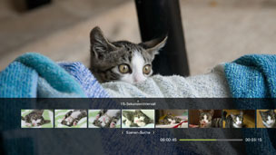
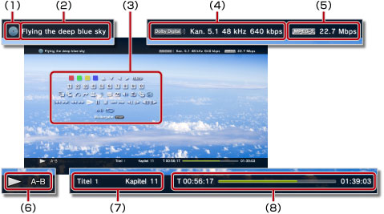

Video > Verwenden des Bedienfelds
Verwenden des Bedienfelds
Über die Kontrollmenüs auf dem Bildschirm können Sie verschiedene Funktionen ausführen. Die Bedienfelds können Sie mit der  -Taste ein- oder ausblenden.
-Taste ein- oder ausblenden.
Die auf dieser Seite angezeigten Icons haben folgende Bedeutung:
 |
Videoaufnahmen auf einer schreibgeschützten Blu-ray Disc (BD) |
|---|---|
| Videoaufnahmen auf einer wiederbeschreibbaren BD | |
 |
Videoaufnahmen im AVCHD-Format |
 |
|
 |
Videoaufnahmen im VR-Modus auf einer DVD-R/DVD-RW |
| Videodateien im Systemspeicher | |
 |
Videodateien auf einem Datenträger* |
| * |
Bei einigen Modellen ist ein geeigneter USB-Adapter (nicht mitgeliefert) erforderlich, um Datentrager nutzen zu konnen. |
|---|
Hinweis
Bei einigen Inhalten gelten vom Hersteller voreingestellte Wiedergabebedingungen. In solchen Fällen stehen einige Kontrollmenü-Optionen unter Umständen nicht zur Verfügung.
Rot/grüne/gelbe/blaue Icons


Ausführen der dem Icon entsprechenden Funktionen. Welche Funktionen dem Icon zugewiesen sind, hängt von den Inhalten ab.
Nach oben/Nach unten/Links/Rechts

Auswählen einer Option.
Eingabe
Bestätigen der ausgewählten Option.
Zifferntasten

Eingeben von Zahlen.
Popup-Menü
Aufrufen des Popup-Menüs.
Menü
Aufrufen des Menüs.
Haupt-Menü
Aufrufen des Haupt-Menüs.
Zurück
Zurückschalten zu einer bestimmten Stelle im Video.
Szenen-Suche


Mit dieser Funktion können Sie in bestimmten Zeitintervallen erstellte Miniaturbilder anzeigen. Wählen Sie ein Miniaturbild aus, um das Video von dieser Szene ab wiederzugeben.

1. |
Wählen Sie mit der |
|---|
 - oder
- oder  -Taste das Zeitintervall zum Erstellen von Miniaturbildern aus. Sie können [Kapitel] oder eins von verschiedenen Zeitintervallen auswählen.
-Taste das Zeitintervall zum Erstellen von Miniaturbildern aus. Sie können [Kapitel] oder eins von verschiedenen Zeitintervallen auswählen.2. |
Wählen Sie mit der |
|---|
 - oder
- oder  -Taste das Miniaturbild der Szene aus, die Sie sehen möchten. Die Wiedergabe beginnt ab der ausgewählten Szene.
-Taste das Miniaturbild der Szene aus, die Sie sehen möchten. Die Wiedergabe beginnt ab der ausgewählten Szene.Anmerkungen
- Die Option [Kapitel] kann nur bei Videoinhalten ausgewählt werden, die Kapitelinformationen enthalten.
- Die Szenen-Suche kann bei Videoinhalten, die kürzer als eine Minute sind, nicht verwendet werden.
- Die Szenen-Suche kann bei bestimmten Typen von Videoinhalten nicht verwendet werden.
- Wenn Sie ein Miniaturbild auswählen, wird etwa 15 Sekunden lang eine Vorschau der Szene angezeigt.
Weiter zu


Starten der Wiedergabe ab einem bestimmten Kapitel oder ab einer mit Zeitangabe festgelegten Stelle.
| Titel X | Geben Sie die Titelnummer an. |
|---|---|
| Kapitel X | Geben Sie die Kapitelnummer an. |
| XX:XX / XX:XX:XX | Geben Sie die Stelle mit einer Zeitangabe an. |
Anmerkung
Bei manchen Videodateien können Sie (Weiter zu) nicht verwenden.
Blickwinkel-Optionen
Auswählen eines verfügbaren Blickwinkels bei Inhalten, für die mehrere Blickwinkel aufgezeichnet wurden.
Audio-Optionen
Auswählen einer verfügbaren Audio-Option bei Inhalten, für die mehrere Tonspuren aufgezeichnet wurden.
Untertitel-Optionen
Auswählen einer verfügbaren Untertitel-Option bei Inhalten, für die mehrere Untertitelsprachen aufgezeichnet wurden. Untertitel können ausgewählt werden, wenn sie von den Inhalten unterstützt werden.
Anmerkungen
- Zum Anzeigen von Untertiteln müssen Sie zu
 (Einstellungen) >
(Einstellungen) >  (Video-Einstellungen) > [Untertitel] wechseln und die Option auf [Ein] setzen.
(Video-Einstellungen) > [Untertitel] wechseln und die Option auf [Ein] setzen. - Die Untertitel-Einstellung steht nur bei in Nordamerika verkauften PS3™-Systemen zur Verfügung.
Untertitel-Stiloptionen
Auswählen einer verfügbaren Anzeigeoption bei Inhalten, für die mehrere Stile für Untertitel aufgezeichnet wurden.
Lautstärkeeinstellung
Einstellen des Lautstärkepegels für Inhalte, die unter  (Video) wiedergegeben werden. Wählen Sie einen von neun Pegeln aus.
(Video) wiedergegeben werden. Wählen Sie einen von neun Pegeln aus.
Anmerkungen
- Der Ton ist möglicherweise verzerrt, wenn der Lautstärkepegel zu hoch eingestellt ist. Senken Sie den Lautstärkepegel in diesem Fall.
- Diese Einstellung ist bei bestimmten Audiogeräten oder bei der Ausgabe bestimmter Audiosignaltypen möglicherweise deaktiviert.
AV-Einstellungen
Nehmen Sie Einstellungen vor, die die Ausgabe von unter (Video) wiedergegebenen Inhalten betreffen. Welche Optionen angezeigt werden, hängt von den Inhalten ab.
| Einzelbild-Geräuschreduzierung | Damit wird feines Rauschen reduziert. |
|---|---|
| Block-Geräuschreduzierung | Damit wird mosaikartiges Blockrauschen auf dem Bildschirm reduziert. |
| Mosquito Noise Reduction | Damit wird Mosquito-Rauschen reduziert, das an den Rändern von Bildern auftritt. |
| Hochskalieren | Damit wird die Ausgabe hochskaliert. Der eingestellte Wert wird in [BD/DVD - Hochskalierer] unter (Einstellungen) > (Video-Einstellungen) angezeigt. |
| Video-Ausgangsformat | Einstellen des Video-Ausgangsformats. Wählen Sie das Video-Ausgangsformat für die Wiedergabe von DVDs oder BDs aus. Der eingestellte Wert wird in [BD/DVD - Video-Ausgangsformat (HDMI)] unter (Einstellungen) > (Video-Einstellungen) angezeigt. |
| Y Pb/Cb Pr/Cr Superweiss | Einstellung für superweißes Display. Ein superweißes Signal kann jetzt bei Wiedergabe einer DVD, BD oder AVCHD-Disc ausgegeben werden. Der eingestellte Wert wird in [Y Pb/Cb Pr/Cr Superweiss (HDMI)] unter (Einstellungen) >  (Anzeige-Einstellungen) angezeigt. (Anzeige-Einstellungen) angezeigt. |
| RGB Voller Bereich | Einstellung für Anzeige mit RGB Voller Bereich. Der eingestellte Wert wird in [RGB Voller Bereich] unter (Einstellungen) > (Anzeige-Einstellungen) angezeigt. |
| Dynamikbereichskontrolle | Damit wird die Dynamikbereichskontrolle eingestellt. Aktivieren oder deaktivieren Sie die Dynamikbereichskontrolle des PS3™-Systems während der Wiedergabe von BDs und DVDs mit Dolby Digital-Ton. Der eingestellte Wert wird in [BD/DVD - Dynamikbereichskontrolle] unter (Einstellungen) > (Video-Einstellungen) angezeigt. |
| Audio-Ausgangsformat | Einstellen des Audio-Ausgangsformats. Wählen Sie das Audio-Ausgangsformat für die Wiedergabe von DVDs oder BDs aus. Der eingestellte Wert wird in [BD/DVD - Audio-Ausgangsformat (HDMI)] oder [BD - Audio-Ausgangsformat (optisch digital)] unter (Einstellungen) > (Video-Einstellungen) angezeigt. |
Zeit-Optionen
Auswählen, ob die verstrichene Wiedergabedauer oder die Restdauer eines Titels oder Kapitels angezeigt werden soll. Welche Informationen angezeigt werden, hängt von den wiedergegebenen Inhalten ab.
Bildschirm-Modus
Ändern des Bildschirm-Modus.
| Normal | Anzeigen des Videos ohne Änderung der Bildproportionen, so dass es auf den Bildschirm passt. |
|---|---|
| Zoomen | Anzeigen des Videos ohne Änderung der Bildproportionen, so dass es den Bildschirm füllt, wobei Teile des Videobildes oben und unten oder links und rechts abgeschnitten werden. |
| Vollbild | Anzeigen des Inhalts auf dem ganzen Bildschirm, wobei die Proportionen geändert werden und das Bild vertikal und horizontal gedehnt wird. |
| Original | Anzeigen des Videobildes in seiner Originalgröße. |
Anmerkung
Je nach Videodatei ist es unter Umständen nicht möglich, den Bildschirm-Modus zu wechseln.
Icon ändern
Sie können das zu einer Videodatei gehörend Icon (Miniaturbild) wechseln. Wählen Sie während der Wiedergabe der Videodatei (Icon ändern) an der Stelle, an der das Bild angezeigt wird, das Sie als Icon auswählen wollen.
Anmerkungen
- Je nach Videodatei ist es unter Umständen nicht möglich, das Icon zu wechseln.
- Eine Videodatei, die kürzer als zwei Sekunden ist, kann nicht als Icon verwendet werden.
Löschen
Sie können eine Videodatei, die wiedergegeben wird, löschen.
Anzeigen
Anzeigen des Wiedergabestatus und anderer verwandter Informationen. Welche Informationen angezeigt werden, hängt von den wiedergegebenen Inhalten ab.

(1) |
Datenträger |
|---|---|
(2) |
Titel |
(3) |
Kontrollmenüs |
(4) |
Audio-Codec/Kanalanzahl/Abtastrate/Bitrate |
(5) |
Video-Codec/Bitrate |
(6) |
Status-Icon |
(7) |
Titel/Kapitel |
(8) |
Verstrichene Dauer/Gesamtdauer |
Zurück (Zurück zum Anfang)/Weiter
Wechseln zum vorherigen oder nächsten Kapitel.
Anmerkung
Wenn Sie auf einem Datenträger oder im Systemspeicher gespeicherte Videodateien wiedergeben, steht  (Weiter) nicht zur Verfügung. Wenn Sie
(Weiter) nicht zur Verfügung. Wenn Sie  (Zurück) auswählen, startet die Wiedergabe am Anfang der Videodatei.
(Zurück) auswählen, startet die Wiedergabe am Anfang der Videodatei.
Schneller Rücklauf/Schneller Vorlauf
Schneller Rück- bzw. Vorlauf der gerade wiedergegebenen Inhalte. Mit jedem Drücken der  -Taste wechselt die Wiedergabegeschwindigkeit.
-Taste wechselt die Wiedergabegeschwindigkeit.
Anmerkung
Mit dem rechten Stick des Wireless-Controllers können Sie bei der Wiedergabe von Videoinhalten einen schnellen Rück- oder Vorlauf ausführen. Steuern Sie die Geschwindigkeit mit dem rechten Stick. Bei der Wiedergabe von Blu-ray 3D™-Inhalten lässt sich die Wiedergabegeschwindigkeit nicht mit dem rechten Stick steuern.
Wiedergabe
Die Wiedergabe der Inhalte wird gestartet.
Anmerkung
In den meisten Fällen wird die Wiedergabe von Videoinhalten an der Stelle fortgesetzt, an der sie zuvor gestoppt wurde.
Wenn die Wiedergabe am Anfang starten soll, drücken Sie zum Stoppen der Wiedergabe und Aufrufen des XMB™-Menüs die PS-Taste. Wählen Sie das Icon aus, drücken Sie die -Taste und wählen Sie [Von Anfang spielen] aus dem Menü „Optionen“.
Pause
Die Wiedergabe wird vorübergehend unterbrochen.
Stopp
Die Wiedergabe wird gestoppt.
Schnellwiederholung/Schnelles Weiterschalten
Wechseln zu einer Stelle im Video, die 15 Sekunden weiter hinten bzw. 15 Sekunden weiter vorne liegt.
Langsam (Rücklauf) / Langsam (Vor)
Wiedergabe in Zeitlupe.
Einzelbild-Rücklauf/Einzelbild-Vorlauf
Bild-für-Bild-Wiedergabe.
A-B Wiederholung
Wiederholte Wiedergabe einer bestimmten Passage.
1. |
Wählen Sie am Anfang der zu wiederholenden Passage |
|---|---|
2. |
Am Ende der zu wiederholenden Passage drücken Sie die |
Anmerkung
Zum Deaktivieren der Funktion „A-B Wiederholung“ wählen Sie (A-B Wiederholung) erneut.
Wiederholung
Inhalte werden wiederholt wiedergegeben.
Anmerkung
Zum Deaktivieren der Funktion „Wiederholung“ wählen Sie (Wiederholung), bis [Wiederholung Aus] angezeigt wird.